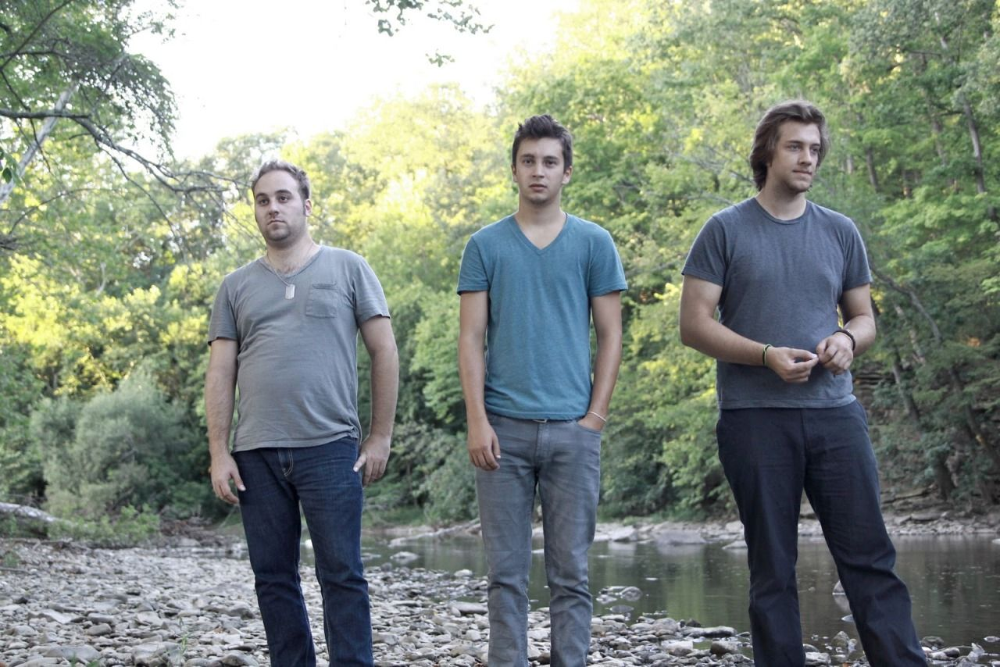
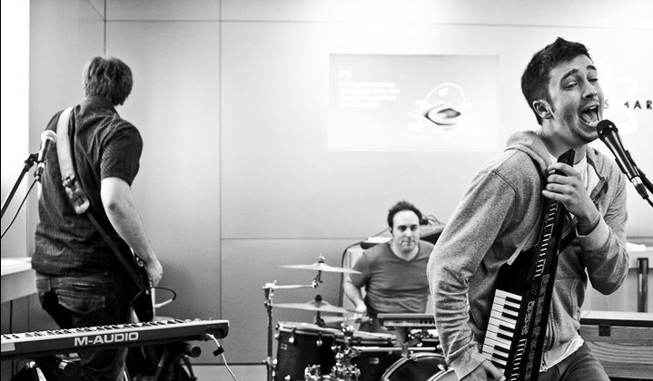

Rapero, cantante, músico, compositor y vocalista de Twenty One Pilots.
Después de ver a un compositor en el club High Street, rechazó una beca de baloncesto de la Universidad de Otterbein, y comenzó a tocar música después de encontrar un viejo teclado en su armario (un regalo de Navidad de su madre), aquí comienza su carrera.
Josh Dun
Interpreta la bateria y otros instrumentos para el dúo musical Twenty One Pilots.
Antes de ser parte de Twenty One Pilots formó parte termporalmente de House of Heroes luego de que el exbaterista, Colin Rigsby, se tomase un descanso para poder pasar más tiempo con su familia. Fue recomendado a la banda por el propio Rigsby.
Carrera artística
La banda se formó en 2009 por el vocalista Tyler Joseph junto con Nick Thomas y Chris Salih, quienes se fueron en 2011. Desde su partida, la formación ha consistido en Tyler Joseph y el baterista Josh Dun.

TOP inicialmente tocó para una amplia variedad de audiencias en clubes y lugares alrededor del área de Columbus. Tocar en lugares de metal, hardcore y electrónicos influyó en Joseph para incorporar estos estilos dispares con su composición. Para llamar la atención de asistentes y promotores desconocidos o desinteresados, la banda comenzó a experimentar con disfraces y acrobacias en el escenario. La banda lanzó de forma independiente dos álbumes Twenty One Pilots (2009) y Regional At Best (2011), antes de ser firmada por el sello discográfico Fueled by Ramen en 2012.

Estilo musical
El estilo musical de la banda ha sido descrito como hip hop alternativo, electropop, indie pop, pop rock, rap, reggae, trip hop, e indie rock. También han sido ocasionalmente clasificados como "indie rock",pop, electrónica, indie rock, pop-rap, hip hop, indietronica, y en el caso de Blurryface, reggae. Es difícil categorizar a la banda usando solamente un género, ya que encajan dentro de varios. Se ha atribuido esto parcialmente al hecho de que, tanto Joseph como Dun, son músicos autodidactas, lo que implica que mientras producen su trabajo rompen muchas convenciones musicales de las que no son conscientes, incluyendo estar confinado a un único género.
Instrumentalmente, Twenty One Pilots tiene una mezcla de piano (algunas veces un teclado eléctrico o una keytar), sintetizadores, batería (también mezclada con batería eléctrica en algunas partes), voz y ocasionalmente ukelele, trompetas, pandero o bajo. Líricamente, sus canciones son escritas por Joseph, quién incorpora tanto rap como canto en sus letras.